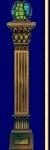
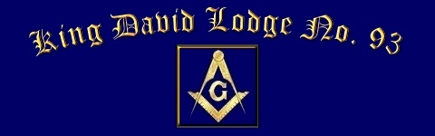
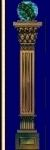
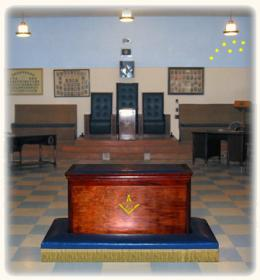
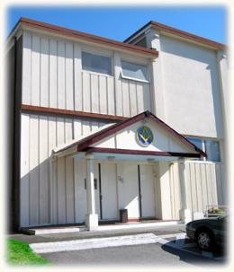
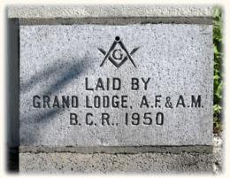

|  |  |  |
A Short History of King David Lodge No. 93 A.F. and A.M., B.C. & Y.R. By Right Worshipful Brother J. T. Watt, P.D.D.G.M. The beginning of Freemasonry in West Vancouver had its origin as a result of the aftermath of the First World War 1914 – 1918. In the late fall of 1919, when men everywhere were struggling towards the light of Peace on Earth, it was only natural that anywhere men could gather in a brotherly spirit was eagerly sought after. Small wonder, then, that Freemasonry became the centre of great numbers seeking admission. Let it not be forgotten that the impetus then received was a direct result of the shining mark made in the World Darkness by the Grand Old Lodges that had been in existence for many years and whose present Members were not stepping in to fill the gaps left by the Grim Reaper. May we continue to be worthy of their memory. In January, 1920, feelers were sent out to find brethren who might be interested in the formation of a Lodge in West Vancouver, where it was difficult, owing to transportation difficulties for members to attend Lodge, either in Vancouver or North Vancouver. On February 16th, 1920, eight Brethren, whose names are included among those of the founders of the Lodge, listed below, met to form a Committee to organize a body large enough to make a petition to Grand Lodge. On February 23rd, 1920 and weekly thereafter, increasing numbers met, in the Ferry building on 14th Street. At a meeting held on March 16th, 1920, the purpose of which was to obtain permission from Grand Lodge to authorize a Lodge of Instruction, the temporary Officers of the Lodge were chosen by placing the names of the Members in a hat. As each name was drawn, that party became an officer. The naming of the new Lodge was left to Worshipful Brother Gillett, who afterwards became the first Worshipful Master of the Lodge. On March 22nd, 1920, a complete slate of Officers was elected and at this meeting, a note from Very Worshipful Brother DeWolfe Smith, Grand Secretary, approving the idea of a Lodge of Instruction, was received. Assessments were made (usually $2.00 each) to defray expenses from time to time. It was decided that when the Lodge Charter was finally received, the fee would be $10.00. On March 29th, 1920, a more complete list of Freemasons in the District was compiled and Brethren on this list became the Founders of our King David Lodge. On April 19th, 1920, while still awaiting official authorization to form a Lodge of Instruction from Grand Lodge, the Sonrisa Club was formed. All members of the Club were Master Masons. The Club’s sole purpose was to provide an outlet for Masonic energy. The Club provided a place for its members to meet and practice on the Q.T. On April 2nd, 1920, Right Worshipful Brother Chas Blaney, then D.D.G.M. wrote to say that he would attend a meeting called for May 3rd, 1920. One of the principal difficulties faced by the fledgling Lodge was in finding a suitable meeting place. The G.W.V.A. rooms, the Old Fire Hall, the old Church Building and the Dundarave Hall were all considered. Worshipful Brother W. J. Irwin was the Agent for the Dundarave Hall and offered to do anything he could to make use of the Dundarave Hall by the Lodge comfortable and ultimately, the Brethren opted for that location for its early meetings. On May 3rd, 1920 some 24 Brethren gathered at Dundarave Hall to welcome Right Worshipful Brother Blaney, who brought official authorization from Grand Lodge for the creation of a Lodge of Instruction. A most enjoyable and instructive evening was enjoyed by all present, concluding with a banquet in the Ambleside Tea Rooms at 14th Street and Ambleside, at which the silver tongues of oratory were loosed with good effect. The West Vancouver Lodge of Instruction had its commencement from this date. The Lodge of Instruction carried on as such for the ensuing 7 months. Had the Brethren but known, dispensation might have been secured more quickly if the support of our nearest Sister Lodges, Burrard No. 50 and Duke of Connaught No. 64 had been requested, but the Brethren were new to the formation of a Lodge and neglected to make that request for some time. When sought, the consent of our Sister Lodges was freely given and the Lodge of Instruction was constituted King David Lodge No. 93 as follows: Most Worshipful The Grand Lodge A.F. and A.M. of British Columbia To all whom these presents shall come: Greeting Whereas application has been made by (here follows the list of thirty founders which appears on the fly-leaf of this booklet) Master Masons residing at Hollyburn, West Vancouver, in the Province of British Columbia, and in the Masonic District No. 13 for a dispensation empowering them to meet as a regular Lodge of Freemasons at the Municipality of West Vancouver to be known as King David Lodge. Now know ye that by virtue of the power and authority in us vested, we do by these presents grant permission to the said brethren to meet as a Lodge of Freemasons at Hollyburn, West Vancouver, on the second Friday of each month (until such time as a Warrant of Constitution shall be granted by Grand Lodge or this Dispensation is revoked) and to admit members by ballot for the Degrees recognized and practiced by Grand Lodge and we do hereby appoint:
And the aforesaid Lodge known as King David Lodge under Dispensation charging the Brethren to exercise diligence and zeal in conducting the affairs of the Lodge in accordance with the ancient landmarks, and powers herein conferred. And for so doing this shall be full and sufficient authority. Given under our hand and Seal of Grand Lodge of A.F. and A.M. of British Columbia. This 10th day of January, 1921. During the period between Dispensation and Constitution there were nine Members received into membership. On August 8th, 1921, a Warrant of Constitution was granted and King David Lodge No. 93 was instituted by Most Worshipful Brother Wallace S. Terry, Grand Master. During the period of Dispensation, our Lodge held its meetings in an earlier structure on the same site, upon which the Masonic Hall now stands, at 1752 Bellevue Avenue, West Vancouver, BC. The old building was demolished, following the June meeting of the Lodge, in 1950, Worshipful Brother Hamilton Anderson, being the Worshipful Master at the time. The Corner Stone of the new Lodge Hall was laid, in a colourful and impressive ceremony and during the summer of 1950, the current Lodge Hall was built. The Lodge tyled its meeting in September, 1950 in its new Lodge Hall and continues to meet at the same location. The West Vancouver Masonic Hall Society was formed to undertake the upkeep and operation of the new building. The Society, whose Officers and members were all of the Members of King David Lodge, also administered the rental of its facilities to other Masonic Lodges and concordant bodies, as suitable opportunities might arise. At the time of receiving Dispensation and its Constitution, King David Lodge was placed in District No. 13. For many years thereafter, the growth of the Craft in British Columbia was such that many new Lodges were formed. As a result, there were many rearrangements of Masonic Districts. In 1923, King David Lodge was placed in District No. 15 and in 1928 a further subdivision of the District, placed the Lodge in District No. 17. Originally District 17 included all Lodges on the North Shore of Burrard Inlet and the Sunshine Coast, however, in 1957 a further subdivision became necessary and District No. 24 was formed. King David Lodge remained and has remained one of the seven Lodges forming District No. 17. In 1981, the West Vancouver Masonic Hall Society was re-organized, to admit to membership, the Brethren of the other Lodges occupying the Lodge Hall on Bellevue Avenue, Hollyburn Lodge No. 135 and Prospect Lodge No. 172. Founders of King David Lodge No. 93
|
|||||||||||||||
| Grand Lodge | Members' Pages | Contact Us ©2004 King David Lodge #93. All rights reserved. PO Box 19845 - West Vancouver, British Columbia, Canada - V7V 4S1 Web design by Web Design Pro | |||||||||||||||